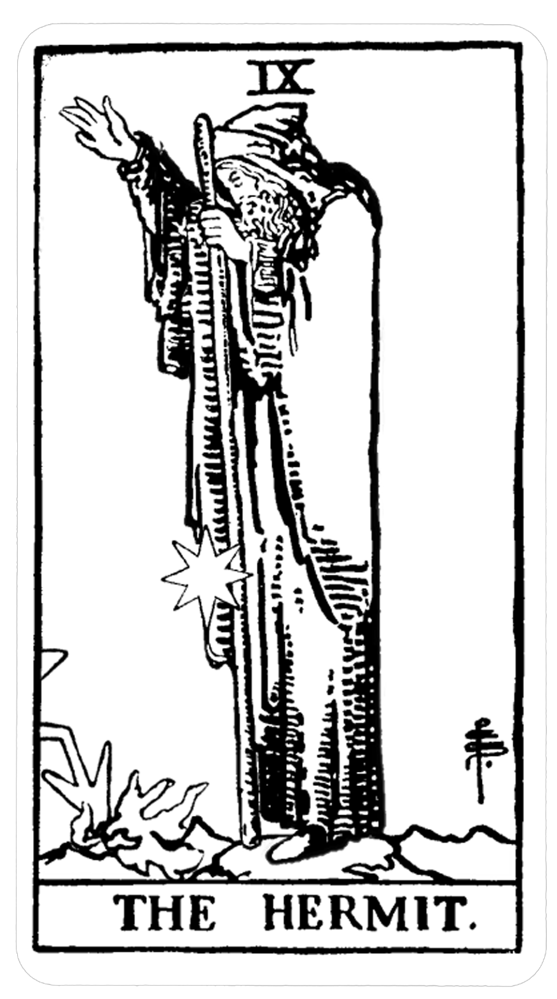

The Hermit depicts an old man standing alone at the peak of the mountain while holding a lantern in one of his hands and a staff on the other. The mountain denotes accomplishment, development, and success. The hermit tarot card refers to the level of spiritual knowledge that he attained, and that he is ready to impart that knowledge to everyone. There is also a deep commitment he has to his goal and a solid awareness of the path that he is taking. Inside the lantern, you will notice a star with 6 points which is also known as the Seal of Solomon. This symbol represents wisdom. The staff that he holds depicts authority and power.
The Hermit is a seeker for the knowledge that comes from within. A lonely wanderer in the path of the night, he searches for that which can only be gained with long periods of solitude - the inner voice. To hear it, he must disconnect from the crowds whose voices and desires threaten to overcome his own. He walks through the dark night of his unconscious, guided only by the low light of the northern star, with his destination being his home, his self.
In his right hand, he holds a lantern with a six-pointed star inside; it is the Seal of Solomon, a symbol of wisdom. As the Hermit walks his path, the lamp lights his way – but it only illuminates his next few steps rather than the full journey. He must step forward to see where to go next, knowing that not everything will be revealed at once. In his left hand, the side of the subconscious mind, the Hermit holds a long staff (a sign of his power and authority), which he uses to guide and balance him.
He allows the lantern to drop, creaking into a million pieces and freeing the star inside, returning it to the sky. Perhaps he feels wise enough without it, or maybe he grew unsatisfied with its direction.